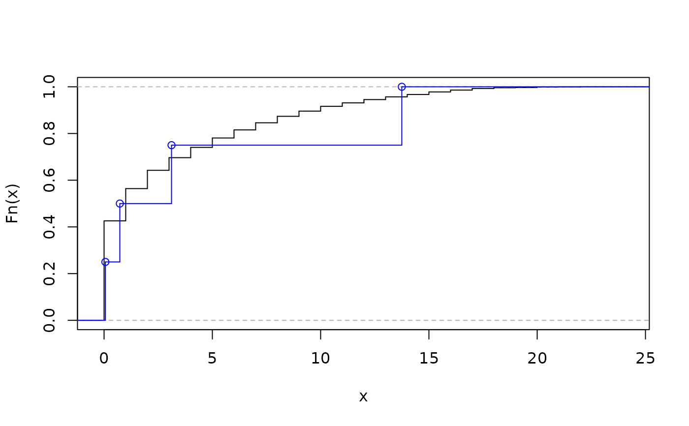

plotRates is useful for exploratory data anlaysis (EDA) tool and
and can help judging rate heterogeneity across sites models (RHAS) and see
where it limitations are (Ferretti, Golubchik, Di Lauro, Ghafari, Villabona-Arenas, Atkins, Fraser, and Hall 2026)
.
plotRates plots the cumulative distribution function based on the
parsimony score for the data and the discrete rate model.
Usage
plotRates(obj, ...)
# S3 method for class 'pml'
plotRates(obj, col = "blue", main = "", rug = FALSE,
xlim = NULL, append = FALSE, ...)
# S3 method for class 'modelTest'
plotRates(obj, substitution = NULL, model = NULL,
append = FALSE, pos = "bottomright", col = NULL, lty = 1, ...)Arguments
- obj
an object of class pml
- ...
Further arguments passed to or from other methods.
- col
color of the cdf.
- main
a main title for the plot.
- rug
logical; if TRUE a
rugis added to the plot.- xlim
the x limits of the plot.
- append
logical; if TRUE only add to an existing plot.
- substitution
substitution model for which the cdf is plotted.
- model
vector containing the models to plot.
- pos
a character string defining the position of the legend.
- lty
the line type, see
par.
References
Ferretti L, Golubchik T, Di Lauro F, Ghafari M, Villabona-Arenas J, Atkins KE, Fraser C, Hall M (2026). “Biased Estimates of Phylogenetic Branch Lengths Resulting from the Discretised Gamma Model of Site Rate Heterogeneity.” Systematic Biology, syag037. ISSN 1063-5157. doi:10.1093/sysbio/syag037 .
Author
Klaus Schliep klaus.schliep@gmail.com
Examples
data(Laurasiatherian)
fit <- pml_bb(Laurasiatherian, "JC+G(4)", rearrangement = "none")
plotRates(fit)

if (FALSE) { # \dontrun{
mt <- modelTest(Laurasiatherian, model=c("JC", "HKY"))
plotRates(mt)
plotRates(mt, substitution="JC")
plotRates(mt, model=c("HKY+G(4)+I", "HKY+G(4)", "JC+G(4)+I", "JC+G(4)"))
} # }